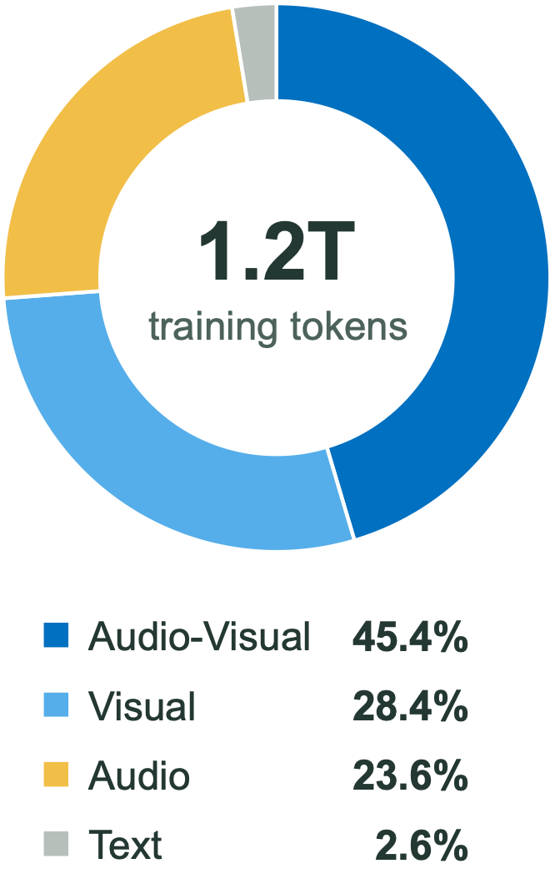
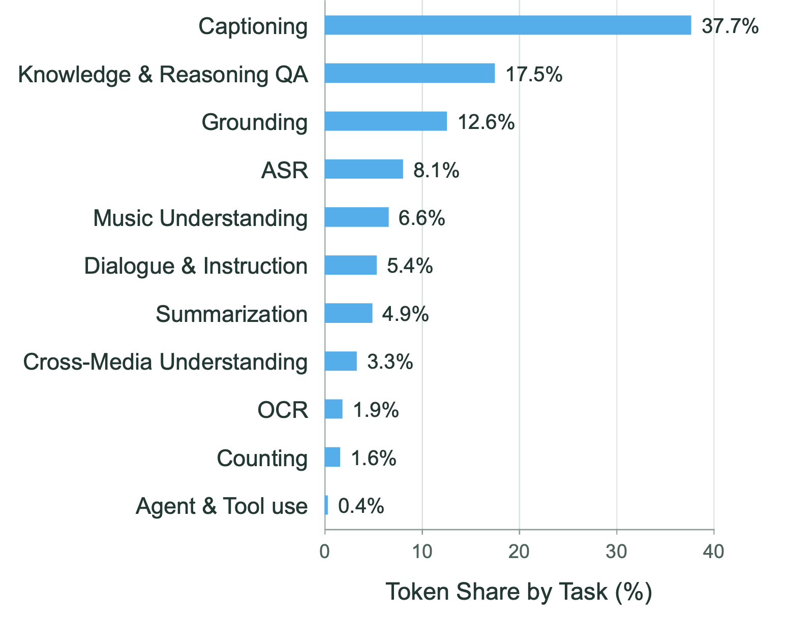
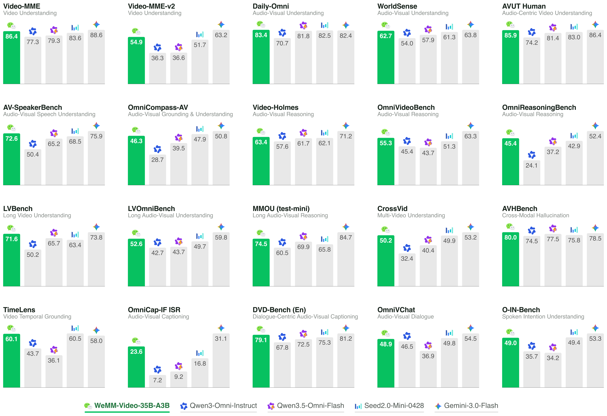
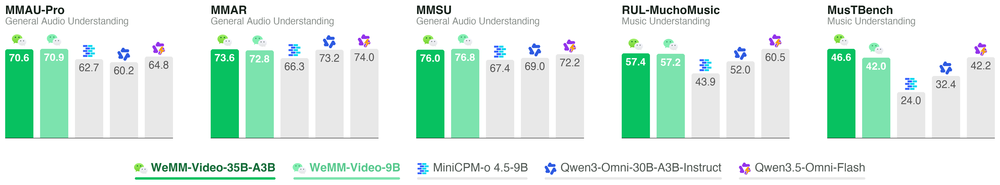

WeMM-Video
Pushing the Frontiers of Open-Source Omni-Modal Video Understanding
1 WeChat Vision, Tencent Inc.2 Tsinghua University
An open-source bilingual omni-modal foundation model family for joint audio-visual video understanding and reasoning.
Capabilities
Most multimodal models still treat video as silent frames paired with speech transcripts. In real videos, meaning lives in the interplay between what is seen and what is heard.
When frames alone miss the plot
In short dramas and films, the camera may hold on one character's reaction while an off-screen voice delivers the twist, a door slams, or the soundtrack abruptly drops. Reading subtitles without hearing tone, timing, and sound effects loses who spoke and why the mood shifted.
When audio and vision must stay in sync
In live commerce, sports, and everyday scenes, rapid camera cuts and spoken commentary unfold together—knowing which product a discount applies to or how a play develops requires understanding visual motion, speech, and ambient audio along the same timeline.
Audio-Visual Video Understanding
Jointly comprehends dynamic scenes, spoken dialogue, speaker identity, and environmental sounds across real-world videos.
Cross-Modal Video Reasoning
Connects visual and acoustic clues across scenes and timestamps to answer complex causal and narrative questions.
Audio, Speech & Music
Handles speech recognition, general acoustic event analysis, voice interaction, and music understanding natively.
Image & Text Understanding
Preserves strong vision-language, document OCR, spatial perception, and general reasoning capabilities.

Architecture
WeMM-Video processes text, images, audio, and video within a single autoregressive architecture, aligning visual frames and continuous acoustic signals chronologically with explicit timestamps.

Vision Backbone
Built on Qwen3.5 (2B / 4B / 9B) and Qwen3.6 (35B-A3B), retaining their native visual encoders and projectors for strong image and video perception.
Audio Encoder & Alignment
Integrates a Whisper-based audio encoder with a window-level Q-Former to convert continuous soundtracks into compact audio tokens.
Chronological Interleaving
Interleaves video frames and audio tokens in time order with textual timestamps, allowing the LLM to reason natively over synchronized sight and sound.
Training Data
To learn real-world audio-visual dynamics from the ground up, we curated a 1.2T-token multimodal training corpus where joint audio-visual data makes up the largest modality share, complemented by broad task coverage.


Dual-Track Video Captioning
Pairs action-dense silent video splits (sports, gaming, dance) with native audio-visual videos (films, short dramas, interviews, live commerce) annotated along a continuous timeline.
Dedicated Audio & Cross-Media Splits
Incorporates large-scale ASR, music, and acoustic understanding alongside multi-source tasks such as video comparison, video-music matching, and product-to-ad consistency.
Progressive Pre-Training & Post-Training
Trained via three-stage progressive pre-training (acoustic alignment, omni-modal injection, long-context scaling) followed by Multi-Teacher OPD, Anti-Repetition MrDPO, and Specialist RL.
Evaluation
WeMM-Video-35B-A3B sets a new open-source state of the art in omni-modal video understanding and leads general audio benchmarks, while preserving strong silent video, image, and text capabilities.
Performance at a Glance


Benchmark Explorer
Models
All weights, inference code, and evaluation recipes are open-sourced on GitHub and Hugging Face.
| Model | Backbone | Parameters | Recommended Use | Weights |
|---|---|---|---|---|
| WeMM-Video-35B-A3B Flagship | Qwen3.6-35B-A3B | 35B (3B active MoE) | Flagship MoE · SOTA omni-modal reasoning | Hugging Face ↗ |
| WeMM-Video-9B | Qwen3.5-9B | 9B Dense | High-accuracy single-GPU deployment | Hugging Face ↗ |
| WeMM-Video-4B | Qwen3.5-4B | 4B Dense | Compact edge & mobile multimodal inference | Hugging Face ↗ |
| WeMM-Video-2B | Qwen3.5-2B | 2B Dense | Ultra-lightweight on-device audio-visual model | Hugging Face ↗ |
Examples
Real-world audio-visual clips demonstrating joint perception across video frames, dialogue, and soundtracks.
Citation
@article{tang2026wemmvideo,
title={WeMM-Video: Pushing the Frontiers of Open-Source Omni-Modal Video Understanding},
author={Changli Tang and Jie Yang and Tianyi Wang and Lei Li and Daoze Zhang and Zijie Xin and Zhan Liu and Li Li and Jinchang Xu and Fengyun Rao and Chao Zhang and Jing Lyu},
journal={arXiv preprint arXiv:2611.26409},
year={2026}
}